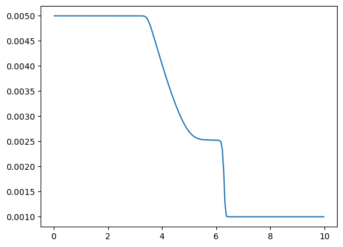

%pip install -q zoomy-coreShallow Water Tutorial with Numpy
Acknowledgements
The reference solution is based on
@article{Delestre_2013,
title={SWASHES: a compilation of Shallow Water Analytic Solutions for Hydraulic and Environmental Studies},
volume={72},
ISSN={0271-2091, 1097-0363}, DOI={10.1002/fld.3741},
note={arXiv:1110.0288 [physics]},
number={3},
journal={International Journal for Numerical Methods in Fluids},
author={Delestre, Olivier and Lucas, Carine and Ksinant, Pierre-Antoine and Darboux, Frédéric and Laguerre, Christian and Vo, Thi Ngoc Tuoi and James, Francois and Cordier, Stephane},
year={2013},
month=may,
pages={269–300}
}Imports
import os
import numpy as np
from sympy import Matrix
import pytest
from attr import field, define
import matplotlib.pyplot as plt
from zoomy_core.fvm.solver_numpy import HyperbolicSolver, Settings
import zoomy_core.fvm.timestepping as timestepping
import zoomy_core.fvm.nonconservative_flux as nc_flux
from zoomy_core.model.basemodel import Model
import zoomy_core.model.initial_conditions as IC
import zoomy_core.model.boundary_conditions as BC
import zoomy_core.misc.io as io
from zoomy_core.mesh.mesh import compute_derivatives
from zoomy_core.misc.misc import Zstruct, ZArray
import zoomy_core.mesh.mesh as petscMesh
import zoomy_core.postprocessing.postprocessing as postprocessing
import zoomy_core.mesh.browse_meshes as bmModel Definition
@define(frozen=True, slots=True, kw_only=True)
class SWE(Model):
dimension: int = 1
variables: Zstruct = field(init=False, default=dimension + 1)
aux_variables: Zstruct = field(default=1)
_default_parameters: dict = field(
init=False,
factory=lambda: {"g": 9.81, "ex": 0.0, "ey": 0.0, "ez": 1.0}
)
def project_2d_to_3d(self):
out = ZArray.zeros(6)
dim = self.dimension
z = self.position[2]
b = 0
h = self.variables[0]
U = [hu / h for hu in self.variables[1:1+dim]]
rho_w = 1000.
g = 9.81
out[0] = b
out[1] = h
out[2] = U[0]
out[3] = 0 if dim == 1 else U[1]
out[4] = 0
out[5] = rho_w * g * h * (1-z)
return out
def flux(self):
dim = self.dimension
h = self.variables[0]
U = Matrix([hu / h for hu in self.variables[1:1+dim]])
g = self.parameters.g
I = Matrix.eye(dim)
F = Matrix.zeros(self.variables.length(), dim)
F[0, :] = (h * U)
F[1:, :] = h * U * U.T + g/2 * h**2 * I
return FMesh Setup
await bm.show_meshes()Meshes available:
- channel_quad_2d_mesh
- channel_quad_2d_mesh3d
- square_mesh
- square_mesh3d
- square_mesh_triangular['channel_quad_2d_mesh',
'channel_quad_2d_mesh3d',
'square_mesh',
'square_mesh3d',
'square_mesh_triangular']await bm.download_mesh('square_mesh', filetype='h5')Downloading square_mesh.h5 → ./square_mesh.h5
Download complete.'./square_mesh.h5'mesh2d = petscMesh.Mesh.from_hdf5(
"square_mesh.h5"
)mesh2d.boundary_conditions_sorted_namesarray(['wall', 'inflow', 'outflow'], dtype='<U7')mesh1d = petscMesh.Mesh.create_1d(domain=(0.0, 10.0), n_inner_cells=200)1D
Boundary conditions and Model instantiation
bcs = BC.BoundaryConditions(
[
BC.Extrapolation(tag="left"),
BC.Extrapolation(tag="right"),
]
)
def custom_ic(x):
Q = np.zeros(2, dtype=float)
Q[0] = np.where(x[0] < 5., 0.005, 0.001)
return Q
ic = IC.UserFunction(custom_ic)
model1d = SWE(
dimension=1,
boundary_conditions=bcs,
initial_conditions=ic,
)Solver Setup
class SWESolver(HyperbolicSolver):
def update_qaux(self, Q, Qaux, Qold, Qauxold, mesh, model, parameters, time, dt):
dudx = compute_derivatives(Q[1]/Q[0], mesh, derivatives_multi_index=[[0, 0]])[:,0]
Qaux[0]=dudx
return Qaux
settings = Settings(name="ShallowWater", output=Zstruct(directory="outputs/shallow_water_1d", filename="swe", clean_directory=True, snapshots=10))Solving
solver = SWESolver(time_end=6.0, settings=settings, compute_dt=timestepping.adaptive(CFL=0.95))
Qnew, Qaux = solver.solve(mesh1d, model1d)2025-11-22 11:39:07.615 | INFO | zoomy_core.fvm.solver_numpy:run:285 - iteration: 10, time: 1.795650, dt: 0.169894, next write at time: 2.000000
2025-11-22 11:39:07.721 | INFO | zoomy_core.fvm.solver_numpy:run:285 - iteration: 20, time: 3.482447, dt: 0.168158, next write at time: 3.333333
2025-11-22 11:39:07.799 | INFO | zoomy_core.fvm.solver_numpy:run:285 - iteration: 30, time: 5.160706, dt: 0.167634, next write at time: 5.333333
2025-11-22 11:39:07.898 | INFO | zoomy_core.fvm.solver_numpy:solve:295 - Finished simulation with in 0.527 secondsVTK Postprocessing
io.generate_vtk(os.path.join(settings.output.directory, f"{settings.output.filename}.h5"))
postprocessing.vtk_project_2d_to_3d(model1d, settings, filename='out_3d')2025-11-22 11:39:18.056 | INFO | zoomy_core.postprocessing.postprocessing:vtk_project_2d_to_3d:71 - Converted snapshot 0/10
2025-11-22 11:39:18.205 | INFO | zoomy_core.postprocessing.postprocessing:vtk_project_2d_to_3d:71 - Converted snapshot 1/10
2025-11-22 11:39:18.379 | INFO | zoomy_core.postprocessing.postprocessing:vtk_project_2d_to_3d:71 - Converted snapshot 2/10
2025-11-22 11:39:18.543 | INFO | zoomy_core.postprocessing.postprocessing:vtk_project_2d_to_3d:71 - Converted snapshot 3/10
2025-11-22 11:39:18.751 | INFO | zoomy_core.postprocessing.postprocessing:vtk_project_2d_to_3d:71 - Converted snapshot 4/10
2025-11-22 11:39:18.936 | INFO | zoomy_core.postprocessing.postprocessing:vtk_project_2d_to_3d:71 - Converted snapshot 5/10
2025-11-22 11:39:19.163 | INFO | zoomy_core.postprocessing.postprocessing:vtk_project_2d_to_3d:71 - Converted snapshot 6/10
2025-11-22 11:39:19.365 | INFO | zoomy_core.postprocessing.postprocessing:vtk_project_2d_to_3d:71 - Converted snapshot 7/10
2025-11-22 11:39:19.616 | INFO | zoomy_core.postprocessing.postprocessing:vtk_project_2d_to_3d:71 - Converted snapshot 8/10
2025-11-22 11:39:19.842 | INFO | zoomy_core.postprocessing.postprocessing:vtk_project_2d_to_3d:71 - Converted snapshot 9/10
2025-11-22 11:39:21.972 | INFO | zoomy_core.postprocessing.postprocessing:vtk_project_2d_to_3d:74 - Output is written to: /drive/outputs/shallow_water_1d/out_3d.h5/out_3d.*.vtk# fig = plots_paper.plot_swe(os.path.join(settings.output.directory, settings.output.filename + ".h5"))path = os.path.join(settings.output.directory, f"{settings.output.filename}.h5")
mesh = io.load_mesh_from_hdf5(path)
timeseries_data = io.load_fields_from_hdf5(path)X = mesh.cell_centers[0]
Y = timeseries_data[0][0]fig, ax = plt.subplots()
ax.plot(X[:mesh.n_inner_cells], Y[:mesh.n_inner_cells])
2D
Boundary conditions and Model instantiation
mesh2d.boundary_conditions_sorted_namesarray(['wall', 'inflow', 'outflow'], dtype='<U7')bcs = BC.BoundaryConditions(
[
BC.Wall(tag="wall", momentum_field_indices=[[1, 2]]),
BC.Extrapolation(tag="inflow"),
BC.Extrapolation(tag="outflow"),
]
)
def custom_ic(x):
Q = np.zeros(3, dtype=float)
Q[0] = np.where(x[0] < 5., 0.005, 0.001)
return Q
ic = IC.UserFunction(custom_ic)
@define(frozen=True, slots=True, kw_only=True)
class SWE2d(SWE):
dimension: int = 2
variables: Zstruct = field(init=False, default=dimension + 1)
# model1d = SWE2d(
# boundary_conditions=bcs,
# initial_conditions=ic,
# )Solver Setup
settings = Settings(name="ShallowWater", output=Zstruct(directory="outputs/shallow_water_2d", filename="swe", clean_directory=True, snapshots=10))Solving
solver = SWESolver(time_end=6.0, settings=settings, compute_dt=timestepping.adaptive(CFL=0.95))
Qnew, Qaux = solver.solve(mesh2d, model2d)2025-11-22 11:39:07.615 | INFO | zoomy_core.fvm.solver_numpy:run:285 - iteration: 10, time: 1.795650, dt: 0.169894, next write at time: 2.000000
2025-11-22 11:39:07.721 | INFO | zoomy_core.fvm.solver_numpy:run:285 - iteration: 20, time: 3.482447, dt: 0.168158, next write at time: 3.333333
2025-11-22 11:39:07.799 | INFO | zoomy_core.fvm.solver_numpy:run:285 - iteration: 30, time: 5.160706, dt: 0.167634, next write at time: 5.333333
2025-11-22 11:39:07.898 | INFO | zoomy_core.fvm.solver_numpy:solve:295 - Finished simulation with in 0.527 secondsVTK Postprocessing
io.generate_vtk(os.path.join(settings.output.directory, f"{settings.output.filename}.h5"))
postprocessing.vtk_project_2d_to_3d(model2d, settings, filename='out_3d')2025-11-22 11:39:18.056 | INFO | zoomy_core.postprocessing.postprocessing:vtk_project_2d_to_3d:71 - Converted snapshot 0/10
2025-11-22 11:39:18.205 | INFO | zoomy_core.postprocessing.postprocessing:vtk_project_2d_to_3d:71 - Converted snapshot 1/10
2025-11-22 11:39:18.379 | INFO | zoomy_core.postprocessing.postprocessing:vtk_project_2d_to_3d:71 - Converted snapshot 2/10
2025-11-22 11:39:18.543 | INFO | zoomy_core.postprocessing.postprocessing:vtk_project_2d_to_3d:71 - Converted snapshot 3/10
2025-11-22 11:39:18.751 | INFO | zoomy_core.postprocessing.postprocessing:vtk_project_2d_to_3d:71 - Converted snapshot 4/10
2025-11-22 11:39:18.936 | INFO | zoomy_core.postprocessing.postprocessing:vtk_project_2d_to_3d:71 - Converted snapshot 5/10
2025-11-22 11:39:19.163 | INFO | zoomy_core.postprocessing.postprocessing:vtk_project_2d_to_3d:71 - Converted snapshot 6/10
2025-11-22 11:39:19.365 | INFO | zoomy_core.postprocessing.postprocessing:vtk_project_2d_to_3d:71 - Converted snapshot 7/10
2025-11-22 11:39:19.616 | INFO | zoomy_core.postprocessing.postprocessing:vtk_project_2d_to_3d:71 - Converted snapshot 8/10
2025-11-22 11:39:19.842 | INFO | zoomy_core.postprocessing.postprocessing:vtk_project_2d_to_3d:71 - Converted snapshot 9/10
2025-11-22 11:39:21.972 | INFO | zoomy_core.postprocessing.postprocessing:vtk_project_2d_to_3d:74 - Output is written to: /drive/outputs/shallow_water_1d/out_3d.h5/out_3d.*.vtk@pytest.mark.nbworking
def test_working():
assert True